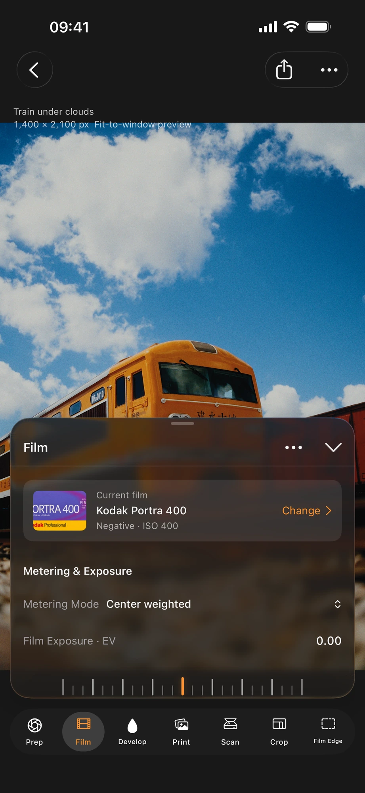
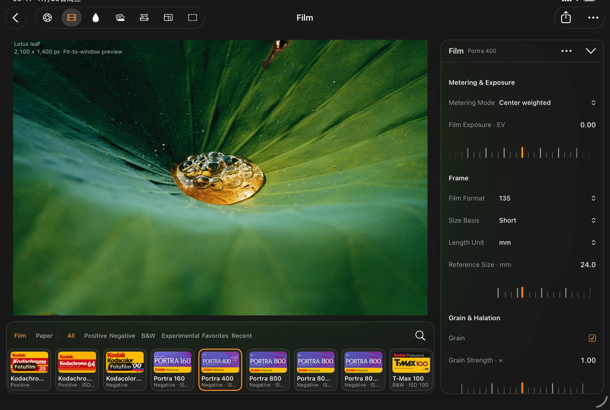

macOS
Make the print on Mac
Work on film and print filtration beside a large preview. Open a folder of photographs or send a rendered JPEG or TIFF from Lightroom Classic.
Open full screenshotSilverphase is a free, open-source virtual darkroom for iPhone, iPad and Mac. Prepare your photo, expose the film and make a print.
Download Silverphase


Five of the six examples use experimental films from MUAStudio’s Fotufilm, adapted by Negs. Film sources
macOS
Work on film and print filtration beside a large preview. Open a folder of photographs or send a rendered JPEG or TIFF from Lightroom Classic.
Open full screenshot
iOS
Import from Photos or Files, or start with the camera. Rate frames in the local library, copy edits and export a batch.
Open full screenshot
iPadOS
In landscape, the canvas sits beside the inspector. Keep the whole photograph in view while adjusting film, development and print.
Open full screenshotScreenshots show each native app. Libraries are local to each device.
Set the starting exposure and tones before choosing a film, developing it and making a print. The darkroom notes follow that sequence through to two prints from one negative.
Darkroom notesSilverphase
Free, open source and processed on your device.
The iPhone and iPad listing is available outside mainland China. The Mac DMG is ad hoc signed and has no Apple notarization.